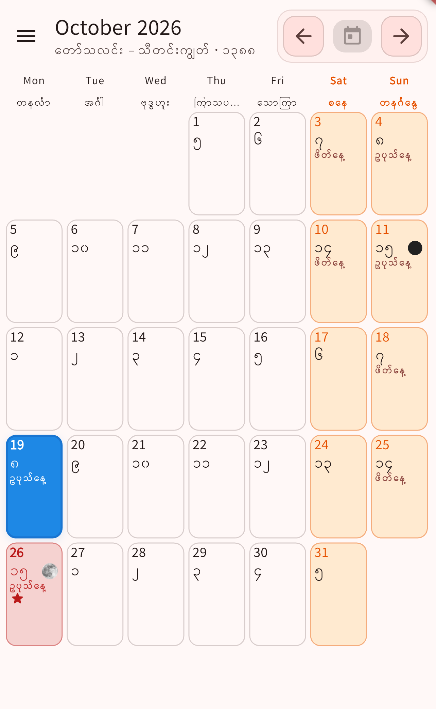

↗Myanmar Lunar Calendar 100+ Years
A Myanmar lunar calendar in Burmese and Mon, with Gregorian date conversion spanning 1920–2100.
View on Google Play ↗Hello, I’m
Software Engineer / Full Stack Developer / AI Engineer
13+ years of turning complex requirements into mobile apps, backend services, C#.NET Windows console applications, and IoT projects that connect software with real-world devices. Now bringing that experience to applied AI.
SELECTED WORK
Published apps, applied AI, and selected
professional engineering work.

↗A Myanmar lunar calendar in Burmese and Mon, with Gregorian date conversion spanning 1920–2100.
View on Google Play ↗An image detection project focused on identifying tigers and lions. Explore the interactive demo hosted on Hugging Face Spaces.
Try the Hugging Face demo ↗An AI-powered ticket routing system using a RoBERTa model for text classification to categorize support tickets and route them to the appropriate team. Explore the interactive demo on Hugging Face Spaces.
Try the Hugging Face demo ↗At Team One Technologies, developed mobile applications and Raspberry Pi integrations using Bluetooth, Wi-Fi, WebSocket, MQTT, and Python for real-time communication and device control.
Developed online and offline Android POS applications, NFC payment and receipt-printing features, and contributed to the KBZ Mobile Banking Android application.
ARCHITECTURE
Mobile applications, backend services,
and connected systems.
MOBILE APP ARCHITECTURE
An Android app uses multithreading to manage sensor data downloads, on-device processing, and communication while running in the background, including when the phone is in sleep mode. It downloads raw sensor data over Wi-Fi and passes it to an embedded Python algorithm for processing, then uses the processed results to display detected chemical types and their detection status, a map breadcrumb trail, and a live line chart in the app and publishes the results to the backend using MQTT over mobile data. The same app also sends Bluetooth commands to a Raspberry Pi to control a solenoid.
Generates raw data
Download raw sensor data as a ZIP file and receive raw sensor data live from WebSocket, both over the Wi-Fi network.
Read the downloaded sensor data and raw data received via WebSocket in the Android app.
Send the raw data to Python code inside the app
Process the raw data and return the result to the app
Use the Python results from sensor data to show a list of chemical types with their detection status, plot a breadcrumb trail on the map, and update a live line chart in the Android app.
Publish the result to the backend using MQTT over mobile data
Receives the published MQTT message
Commands flow from the Android app to the solenoid, with response messages returning through the Raspberry Pi.
Send control commands and receive response messages
Control the solenoid and relay response messages to the app
Act on control commands and return a response
MOBILE BANKING ARCHITECTURE
The Android app requests an XML UI layout from an Oracle-based backend, renders the mobile interface dynamically, and sends user input back through the API for transaction processing.
Returns the XML layout defining the requested screen.
Receives submitted input and processes the banking transaction.
Returns the transaction status and response data.
Parse the screen structure and UI component definitions.
Create mobile views and input fields from the server-provided layout.
Collect the user's entries and send the transaction request to the server.
API services with Node.js and Spring, backed by relational and document databases.
PROFESSIONAL EXPERIENCE
Singapore & Myanmar
2012 — 2026
Team One Technologies Pte Ltd
BC Group Technology
Xan IT Solutions
Code2Lab
Colay Hills
Myanmar Information Technology Pte Ltd
ABOUT ME & EXPERTISE
I am Min Thein Win, a software developer who resides in London, Ontario. I have more than 13 years of experience in software development in Singapore and Myanmar. My experience in software development includes native Android development with Java and Kotlin programming languages and the full Android SDK. I also designed and implemented mobile banking applications and developed online/offline point-of-sale (POS) Android applications and C#.NET Windows Console applications for IoT systems. In addition, I also designed and implemented mobile solutions for the defense department of Singapore.
As well as mobile applications, I have also worked on mobile applications integrated with IoT devices. For example, I have worked on projects that used NFC, Bluetooth, Wi-Fi, WebSocket, and MQTT communication. Some of these projects were run on Raspberry Pi hardware with custom Python algorithms written to solve specific problems. The mobile applications were written using native Android development with Java and/or Kotlin and the full Android SDK. Projects have also used well-known architectures such as MVVM and MVP, as well as standard use of tools such as Git and CI/CD pipelines. I have often worked in an Agile manner, regularly solving technical issues and trying to find better ways to develop and run applications in order to get better performance and user experience.
I am also very interested in developing AI and Machine Learning programs to be able to implement intelligent and innovative programs to solve complex problems in an effective way. I have a Bachelor of Computer Science degree from the University of Computer Studies, Yangon, and a Specialist Diploma in Applied Artificial Intelligence from Nanyang Polytechnic, Singapore. I am currently studying to receive an AI and Machine Learning Certificate from Fanshawe College in London, Ontario. The expected completion date for this program is December 2027.
TECHNICAL SKILLS
Android and iOS mobile app development, Windows app development, Flutter
Backend API development, Node.js, AngularJS, JavaScript
Java, Kotlin, Swift, Python, C#, MVVM, MVP, MVC
IoT development and Raspberry Pi integration, RabbitMQ, MQTT, NFC card tags, Bluetooth, Wi-Fi
SQL Server, MongoDB, SQLite, ROM
Azure AI Services, AI and machine learning model research and solutions, Agentic AI, vibe coding
App testing, CI/CD pipelines, SDLC, project management, Waterfall and Agile models
Good teamwork, quick learner
EDUCATION
Post Graduate Certificate · Fanshawe College
London, Ontario, Canada
Specialist Diploma · Nanyang Polytechnic
Singapore
University of Computer Studies
Yangon, Myanmar
LET’S CONNECT
Exploring software development, full stack, and AI opportunities.
Based in London, Ontario, Canada.